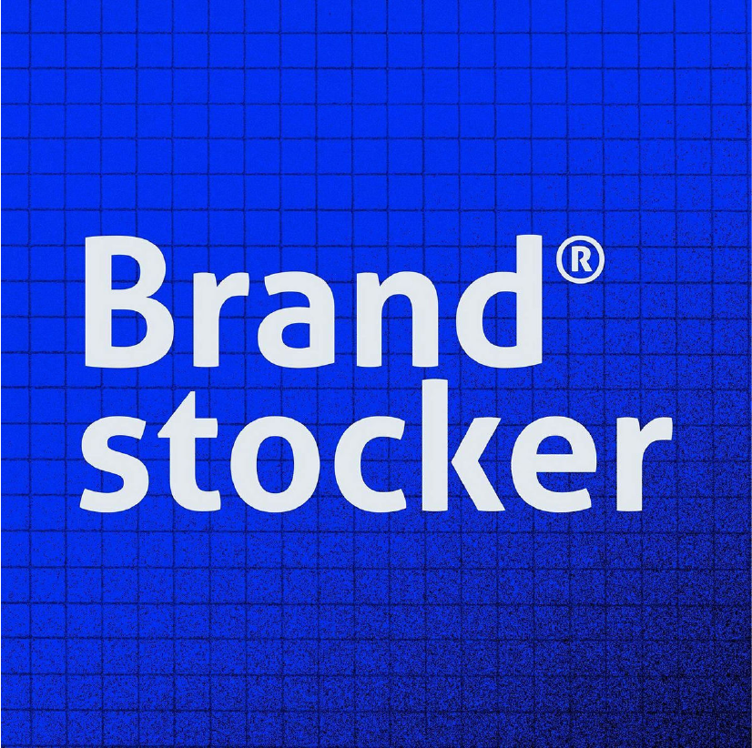
Brandstocker
Redacción de copies, guiones y newsletter con un lenguaje cercano y profesional sobre diferentes marcas.
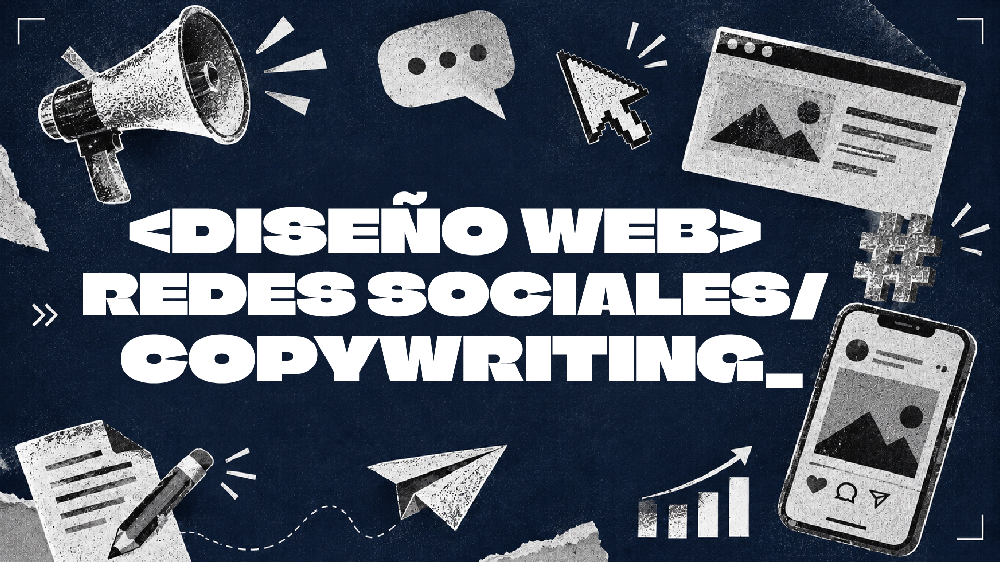
Te estarás preguntando: ¿y a mí qué? Pero antes de que te vayas, ¿qué pasaría si te digo que soy como el “genio de la lámpara”? Tienes razón: puede que mi experiencia no sea la más flamante, pero ¿y mi creatividad?; me presento, no como una dupla creativa, sino como un triplete. La Santa Trinidad. Ya sea porque quieres crear una comunidad única y cercana en redes, diseñar posts atractivos acorde a tu propósito, o si solo quieres un copy al nivel del Premio Planeta; soy la persona que buscas.
Cuento con una experiencia de más de dos años gestionando comunidades online, diseñando posts para redes sociales y redactando copies y contenidos para blogs.
Me considero una aliada de la IA, la escritura persuasiva y las redes, buscando crecer y aprender nuevas herramientas y métodos. Vivo por y para la creatividad, siempre dispuesta a sacar lo mejor de ella en cada proyecto.
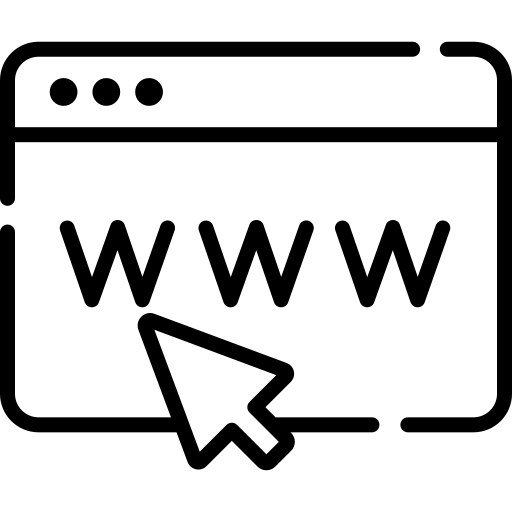
Figma Visual Studio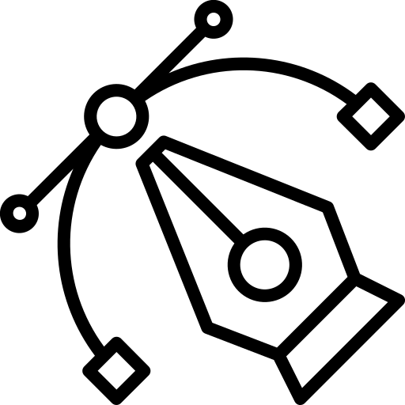
Adobe Suite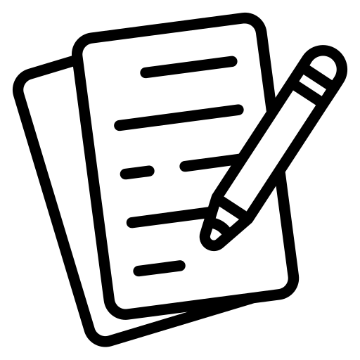
RRSS Copywriting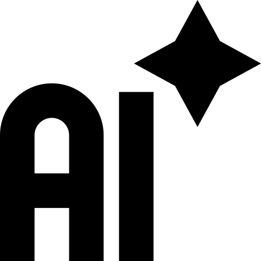
Herramientas de IA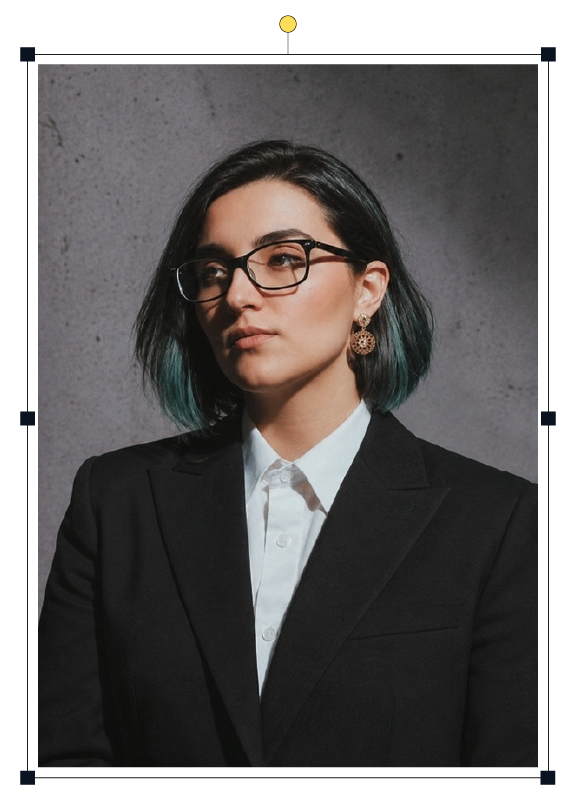

Redacción de copies, guiones y newsletter con un lenguaje cercano y profesional sobre diferentes marcas.
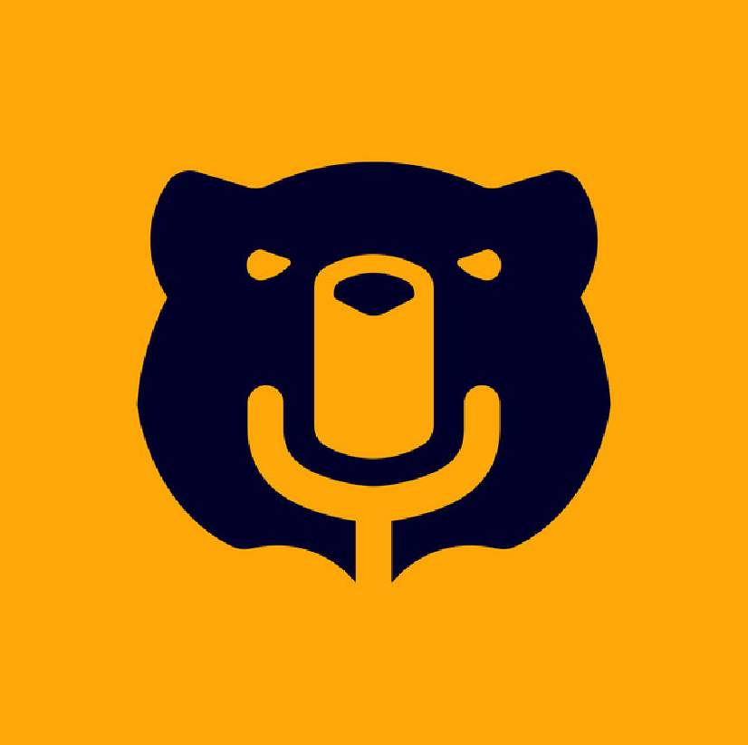
Diseño de creatividades para RRSS con Adobe Suite, alineadas con la temática del evento como sorteos, entrevistas y sponsors.
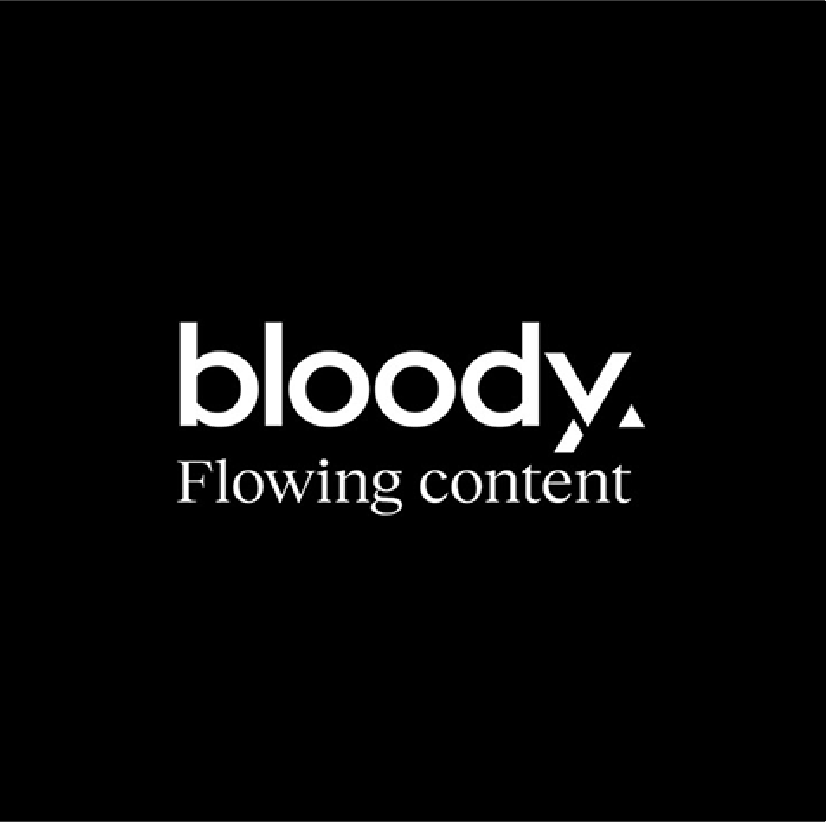
Diseño de creatividades en RRSS: dos automovilísticas y la corporativa de la agencia, con Adobe, Canva y herramientas de IA.
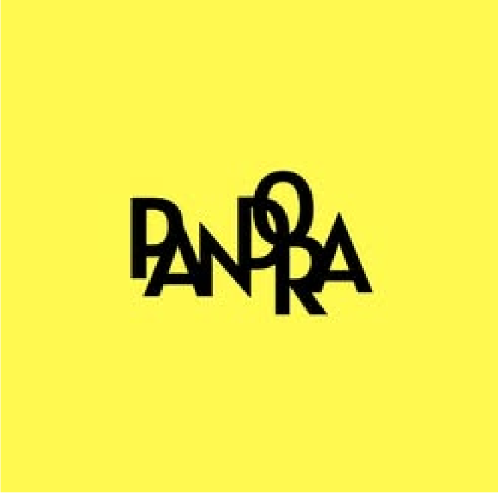
Creación de pósters, diseño de packaging, portadas de libros y elementos coorporativos profesionales y personales.
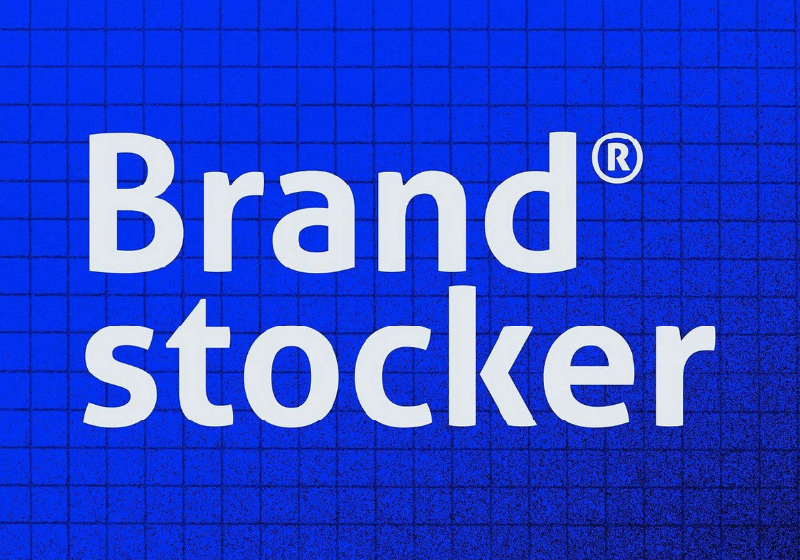
Redacción de copies, guiones y newsletter con un lenguaje cercano y profesional sobre diferentes marcas.
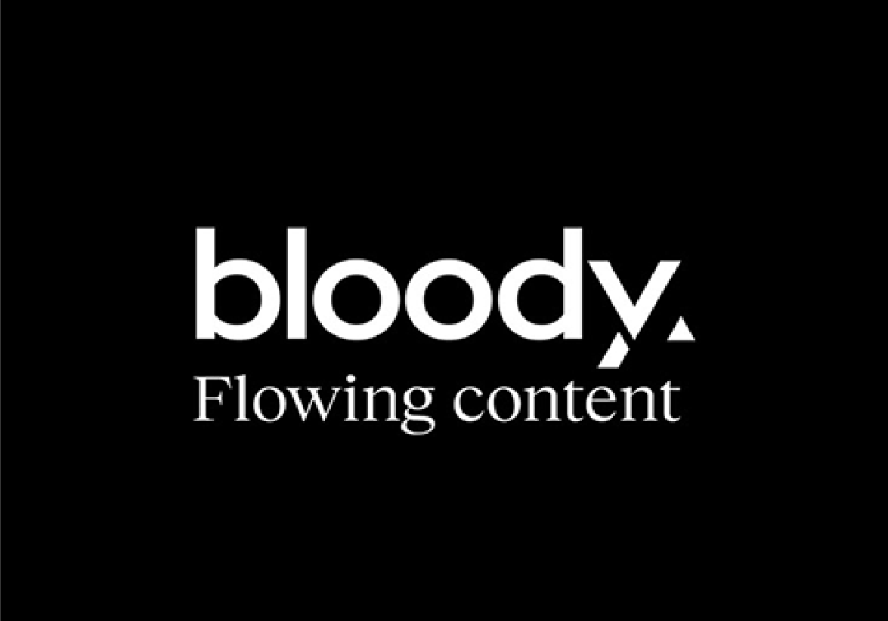
Redacción de copies y artículos para la web con contenido original asistido por IA.
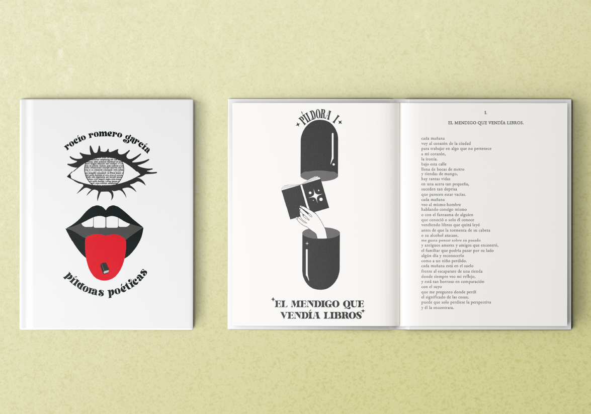
Escritura creativa en proyectos personales como libros y poemarios, autoeditados en correción y en maquetación.
Tus series, películas, libros y discos favoritos en un mismo lugar: guarda, organiza y opina sobre lo que te gusta para que puedas revivirlo tantas veces como quieras.
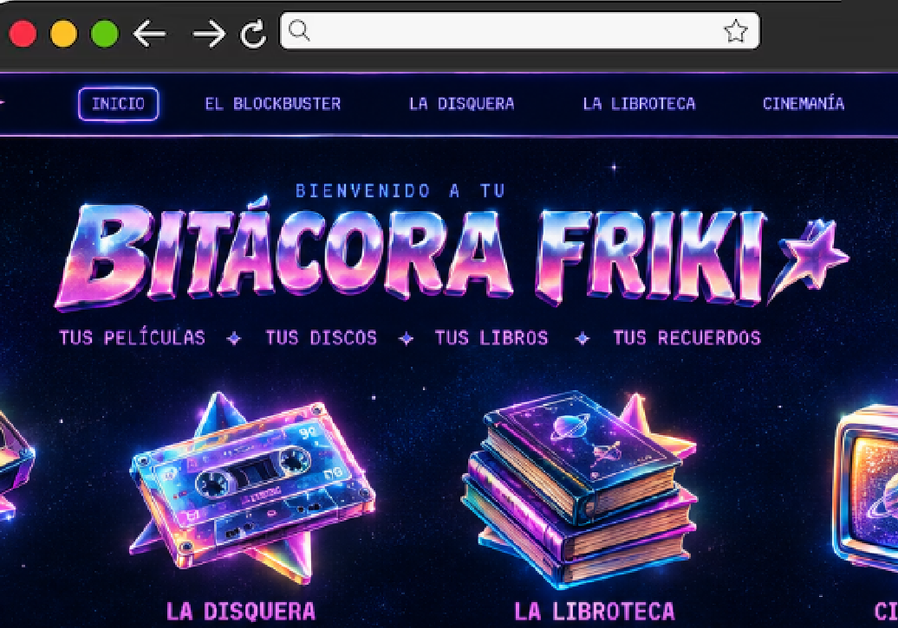